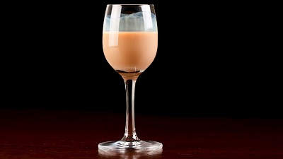

Drinks
Irn bru soft drink

Selection of the Scottish beers

Selection of the Scottish whiskies
Glayva liqueur

The Botanist gin

Atholl Brose
Food
Haggis with neeps and tatties
White and black pudding

Grilled and smoked salmon

Banger and smash
Fish supper (Fish and chips)

Scotch eggs